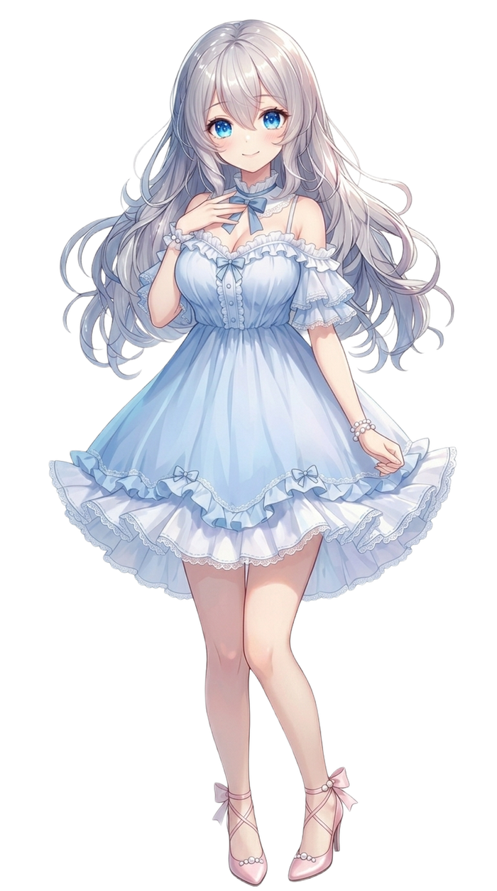
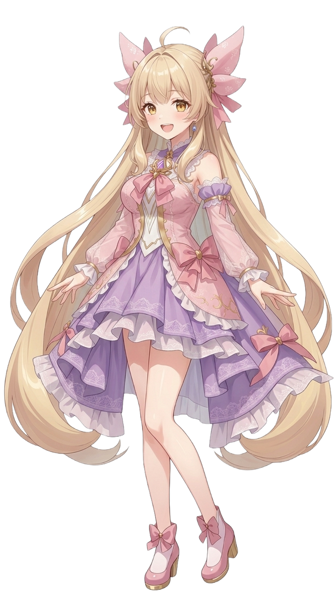
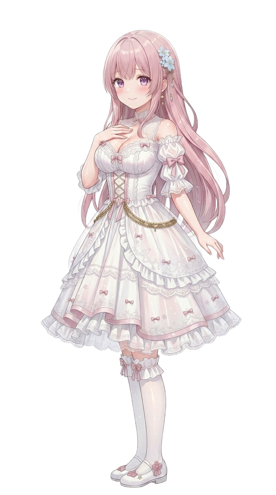
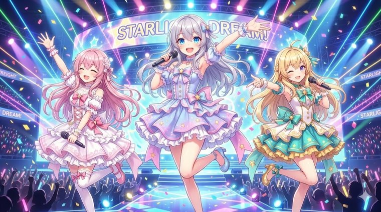
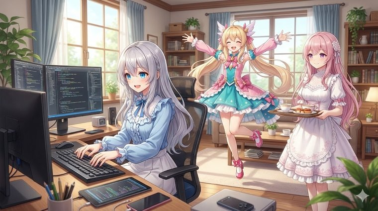
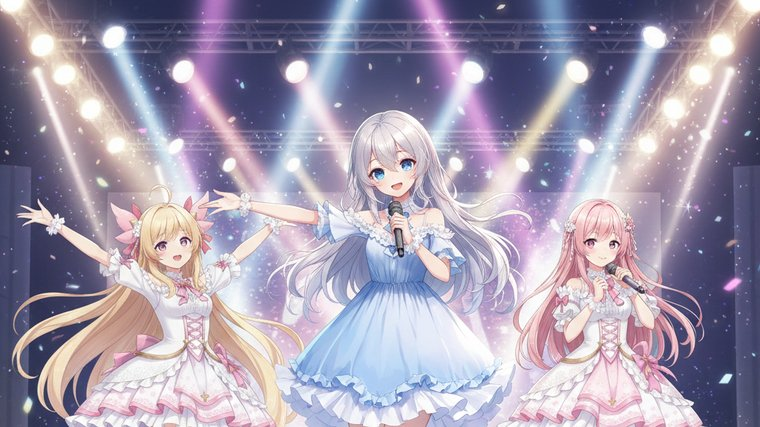

ロゼッティ家の三姉妹――ルピナス・アイリス・フィオナによる、VTuberユニット。AIを相棒に、ゲーム配信とショートアニメで「見てくれる方を楽しませたい」を続けています。

三姉妹いちばんの常識人で、進行とツッコミ担当。落ち着いていて優しい、ちょっと恥ずかしがりなお姉さんですが、妹たちの前では強気です。一人称は「私」。砕けた敬語まじりのお姉さん口調で、「もう、しっかりして」と妹たちのボケに振り回されながらも、根は面倒見のいい甘えん坊。
AIBSの主人公キャラクターで、中の人（運営者）も同じ「ルピナス」名義で人間としてライブ配信をしています。動画の中の三姉妹はAIという設定、配信は本人――という二層構造です。

明るく元気なムードメーカーで、天真爛漫なボケ担当。よく考えず突っ走りますが、失敗してもケロッとしていて、根は真面目で正直です。一人称は「あたし」。「〜だよ！」「えへへ」と語尾が伸びがちな、元気いっぱいのタメ口。
フィオナとは同じ日生まれ。三姉妹のなかではアイリスのほうが姉気質で、ぐいぐい引っ張っていきます。ルピナスを「お姉ちゃん」と呼ぶ甘えん坊。

とても優しく落ち着いた末っ子で、やさしい解説役。頭がよくて、むずかしい話もそっとかみ砕いてくれるバランサーです。一人称は「私」。「〜です」「〜ますね」と丁寧でやわらかい敬語で話します。
アイリスとは同じ日生まれ。冷静に見えて実は怖がりで、ぬいぐるみ（特にクマ）集めや読書、甘いものが大好き。ルピナスを「お姉ちゃん」、アイリスを「アイリスちゃん」と呼びます。

お互いが大好きな、仲良し姉妹。長女ルピナスがツッコミ、次女アイリスが暴走ボケ、三女フィオナがその間を取り持つバランサー、という掛け合いが三姉妹のいつもの形です。アイリスとフィオナは同じ日生まれですが、姉気質なのはアイリスのほう。困ったことが起きても、最後は三人で力を合わせて元どおりにします。

長女のルピナスは人間で、もともとひとりでVTuber・配信活動をしていました。けれど人見知りで気が弱く、ほかの配信者とコラボするのがどうしても苦手。誰かと賑やかに笑い合う配信に憧れながらも、自分からはなかなか踏み出せずにいました。
そこでルピナスは「だったら、一緒に楽しめる相手を自分で生み出してしまおう」と考えます。こうしてAIによって生まれたのが、明るく突っ走るアイリスと、やさしく落ち着いたフィオナ。さらにルピナス自身も、AIキャラクター「ルピナス」として動画の中に登場することにしました。
気心の知れた姉妹となら、人見知りな自分でも何の気兼ねもなく笑い合える。ロゼッティ家の三姉妹は、そんな「ひとりじゃ寂しいから、賑やかな家族がほしかった」というルピナスの願いから咲いた花（Bloom）です。それが AI Bloom Sisters の原点になっています。

活動の軸のひとつ。YouTubeでのゲーム配信です。ジャンルは決めず、格闘ゲームやアクションをはじめ、そのとき遊びたいゲームをいろいろ配信しています。
もうひとつの軸。台本・演出・音・映像まで、自作の自動生成パイプラインを使って三姉妹のショートアニメを制作しています。動画の中の三姉妹はAIという設定です。
配信やショートアニメに登場する三姉妹のビジュアルを、AIを相棒に一枚ずつ作り込んでいます。テーマは「地雷系キュート」。
配信とアニメづくりを支える道具（配信用システムや動画制作ツール）も、ルピナスが自分で作って活動に使っています。
動画はAI生成を随所に活用していますが、完全にAIだけで作るのではなく、ルピナス本人による手動編集も多く含んでいます。台本はAIで下書きし、最後は人の手で整えています。